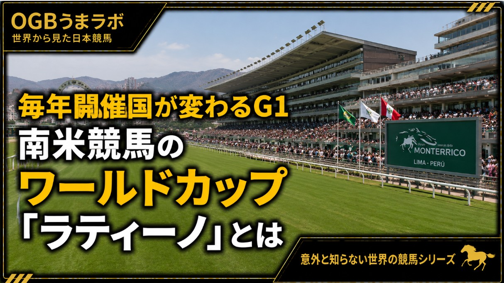

この記事はXに掲載された当時の原文です。情報は掲載時点の内容です。
【海外競馬ニュース】
毎年開催国が変わるG1
南米競馬のワールドカップ「ラティーノ」とは
2026年4月26日、ペルーのモンテリーコ競馬場で、第42回グラン・プレミオ・ラティーノアメリカーノが開催されました。
発表したのは、OSAF（南米サラブレッド振興機構）です。
OSAF公式は、このレースについて次のように紹介しています。
原文：
“the traditional stakes that brings together the best South American Thoroughbreds”
南米最高クラスのサラブレッドが集まる伝統競走、という位置付けです。
また、国際競馬を統括するIFHA（国際競馬統括機関連盟）の流れの中で、南米競馬を代表する国際G1として扱われているレースでもあります。
2026年の勝ち馬は、チリ代表のテアオ。
ペルーの芝2000mで行われた一戦を制し、チリに南米王者のタイトルを持ち帰りました。
では、この #ラティーノ とは、いったいどんなレースなのでしょうか。
最大の特徴は、開催国が毎年変わることです。
日本の競馬でG1といえば、
・日本ダービーは東京競馬場
・有馬記念は中山競馬場
・宝塚記念は阪神競馬場
というように、レースと競馬場が強く結びついています。
しかし、ラティーノは違います。
アルゼンチン、ブラジル、チリ、ペルー、ウルグアイ、パナマなど、南米・中南米の競馬国を持ち回りで開催されます。
つまり、競馬場が変わるだけではありません。
開催国そのものが変わるG1なのです。
まず、南米にはどれくらい競馬を開催している国があるのでしょうか。
IFHA関連資料では、OSAFの競馬・生産組織に関わる国として、
・アルゼンチン
・ブラジル
・チリ
・コロンビア
・エクアドル
・パラグアイ
・ペルー
・ウルグアイ
・ベネズエラ
などが挙げられています。
日本では #南米競馬 というと、アルゼンチンやブラジル、チリあたりを思い浮かべる人が多いかもしれません。
しかし実際には、南米には複数の競馬国が存在し、その中で各国の代表馬が集まる舞台としてラティーノが行われています。
OSAF公式がラティーノの参加国として明記しているのは、
・アルゼンチン
・ブラジル
・チリ
・パナマ
・ペルー
・ウルグアイ
の6か国です。
この時点で、単なる国際招待競走というより、
「南米競馬の国別対抗戦」
と考えた方が分かりやすいかもしれません。
近年の開催を見ても、その特殊性が分かります。
2026年
ペルー・モンテリーコ競馬場
芝2000m
2025年
ブラジル・ガベア競馬場
芝2000m
2024年
ペルー・モンテリーコ競馬場
ダート2000m
2023年
アルゼンチン・サンイシドロ競馬場
芝2000m
2022年
チリ・イポドロモ・チリ競馬場
ダート2000m
2021年
ウルグアイ・マローニャス競馬場
ダート2000m
近年は2000m前後で行われることが多いものの、芝もあればダートもあります。
つまり、ラティーノは毎年同じ条件で行われるG1ではありません。
開催国が変わり、競馬場が変わり、馬場も変わる。
まさに、サッカーの #ワールドカップ のように、開催地そのものが大会の個性になるレースです。
日本で比較するなら、最も近い存在は #JBC でしょう。
JBCは「ジャパンブリーディングファームズカップ」の略で、日本の地方競馬を持ち回りで開催するダート競馬の祭典です。
2026年のJBCクラシックは金沢競馬場のダート2100mで行われます。
これも、日本国内の競馬場を巡る持ち回り型の大レースです。
ただし、ラティーノとの違いは明確です。
JBCは日本国内の地方競馬場を巡るレース。
一方、ラティーノは国境を越えて開催国そのものが変わるレース。
この違いがあります。
そのためラティーノは、
「南米競馬版ワールドカップ」
と表現すると、日本の競馬ファンにもイメージしやすいかもしれません。
さらに日本の競馬ファンにとって面白いのは、
血統面で日本との接点があることです。
2023年のラティーノ勝ち馬は、ブラジルのドウトルスレーニョ。
この馬の父は、アグネスゴールドです。
アグネスゴールドは日本調教馬で、父はサンデーサイレンス。
日本でスプリングステークスを勝った馬でもあります。
つまり、南米最高峰の国際G1を、日本ゆかりの #サンデーサイレンス 系種牡馬の産駒が勝っているのです。
日本ではあまり知られていない南米競馬ですが、血統をたどると、決して日本と無縁ではありません。
では、現地ではこのレースはどのように扱われているのでしょうか。
現地メディアのターフディアリオは、2026年のラティーノについて、次のように報じています。
原文：
“The Gran Premio Latinoamericano festival once again captures the imagination of fans”
ラティーノの祭典が、再びファンの想像力をかき立てている、という表現です。
さらに、グローバルメディアターフが当日の全カードをYouTubeでライブ配信すると伝えており、少なくとも南米競馬圏では「地域を代表する大イベント」として扱われています。
次回、第43回ラティーノは2027年3月、アルゼンチンのパレルモ競馬場で開催される予定です。
日本ではほとんど報じられることのない南米競馬。
しかし、そこには国境を越えて各国の代表馬が集まり、開催国も馬場も変わる、独自の国際G1文化があります。
日本にJBCがあるように、南米にはラティーノがある。
そして、その舞台では日本ゆかりの血統も存在感を示している。
南米競馬は、思っている以上に日本競馬ともつながっているのかもしれません。
出典：
OSAF公式「Results 42nd Gran Premio Latinoamericano G1 2026 at Monterrico Racecourse, Lima」
OSAF公式「Gran Premio Latinoamericano」
Turf Diario「The Gran Premio Latinoamericano festival once again captures the imagination of fans」
Turf Diario「Hipódromo de Palermo will be the host of the 2027 Gran Premio Latinoamericano」
IFHA資料「Global Vision on South American Racing and Breeding Activity」
地方競馬全国協会「JBCクラシック 2026年 レース紹介」
#意外と知らない世界の競馬
26.7.6
うまラボ編集部
元記事：Xで公開した記事